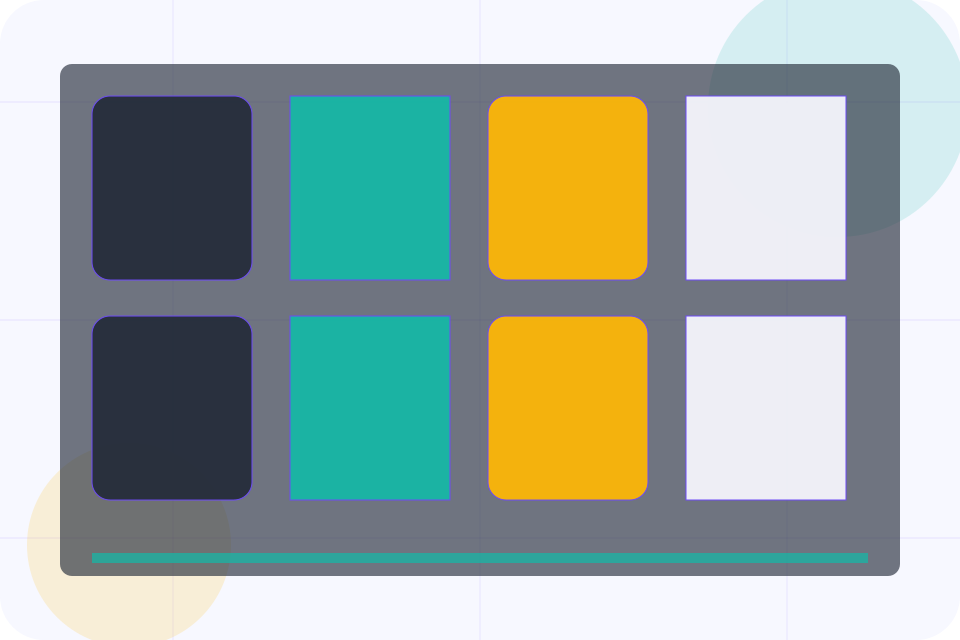
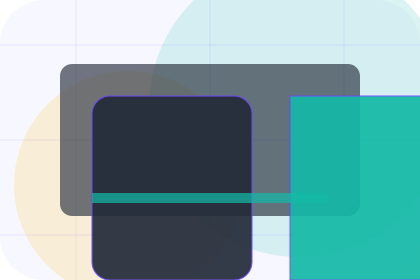
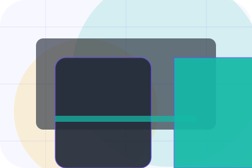
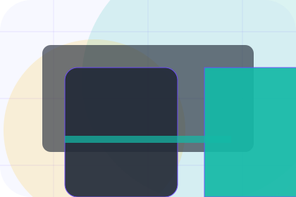
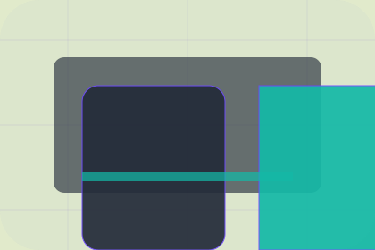

Services / 01
Services by Vow
Services shaped for events, weddings & experience production decisions.
Services opens as a clear events decision hub: what Vow offers, who it helps, why it matters, and which route to take first.
The first screen combines positioning, proof, primary action, and fast internal navigation, so people can act immediately or compare the rest of the services route with context.
Check availabilityPlan the visitReserve with context
Event card hero
Plan the date
Select the closest route and Vow keeps the next step, proof, and follow-up expectation aligned with emotion and confidence.

Services / 02
Compare service routes
Planning explains the practical scope, best-fit situations, and expected outcome so events visitors can compare options without decoding jargon.
The section keeps the offer concrete: what is included, who it is best for, what decision it supports, and which linked route gives the deeper detail.
Explore ServicesVow structures planning around best fit, what changes, and a clear next route so visitors can compare the block quickly before they enquire about a date.
Enquire DateServices / 03
Compare service routes
Styling explains the practical scope, best-fit situations, and expected outcome so events visitors can compare options without decoding jargon.
The section keeps the offer concrete: what is included, who it is best for, what decision it supports, and which linked route gives the deeper detail.
Explore Services
Best Fit
Who should use styling and when it belongs in the services journey.
What Changes
The practical benefit visitors should expect after choosing this route.

Deeper Route
Where to compare details, pricing, support, or contact options before committing.
Services / 04
Compare service routes
Production explains the practical scope, best-fit situations, and expected outcome so events visitors can compare options without decoding jargon.
The section keeps the offer concrete: what is included, who it is best for, what decision it supports, and which linked route gives the deeper detail.
Explore ServicesBest Fit
Who should use production and when it belongs in the services journey.
Services / 05
Compare service routes
Coordination explains the practical scope, best-fit situations, and expected outcome so events visitors can compare options without decoding jargon.
The section keeps the offer concrete: what is included, who it is best for, what decision it supports, and which linked route gives the deeper detail.
Explore ServicesBest Fit
Who should use coordination and when it belongs in the services journey.
What Changes
The practical benefit visitors should expect after choosing this route.
Deeper Route
Where to compare details, pricing, support, or contact options before committing.
Services / 06
Compare service routes
Suppliers explains the practical scope, best-fit situations, and expected outcome so events visitors can compare options without decoding jargon.
The section keeps the offer concrete: what is included, who it is best for, what decision it supports, and which linked route gives the deeper detail.
Explore Services- 01
Best Fit
Who should use suppliers and when it belongs in the services journey.
- 02
What Changes
The practical benefit visitors should expect after choosing this route.
- 03
Deeper Route
Where to compare details, pricing, support, or contact options before committing.
Services / 07
Compare service routes
Guests explains the practical scope, best-fit situations, and expected outcome so events visitors can compare options without decoding jargon.
The section keeps the offer concrete: what is included, who it is best for, what decision it supports, and which linked route gives the deeper detail.
Explore ServicesBest Fit
Who should use guests and when it belongs in the services journey.
What Changes
The practical benefit visitors should expect after choosing this route.
Deeper Route
Where to compare details, pricing, support, or contact options before committing.
Services / 08
Compare service routes
Deliverables explains the practical scope, best-fit situations, and expected outcome so events visitors can compare options without decoding jargon.
The section keeps the offer concrete: what is included, who it is best for, what decision it supports, and which linked route gives the deeper detail.
Explore Services
Best Fit
Who should use deliverables and when it belongs in the services journey.
Services / 09
Compare service routes
Fit explains the practical scope, best-fit situations, and expected outcome so events visitors can compare options without decoding jargon.
The section keeps the offer concrete: what is included, who it is best for, what decision it supports, and which linked route gives the deeper detail.
Explore ServicesBest Fit
Who should use fit and when it belongs in the services journey.
What Changes
The practical benefit visitors should expect after choosing this route.
Deeper Route
Where to compare details, pricing, support, or contact options before committing.
Services / 10
Enquire Date
Vow closes the services route with a clear action, a quick reminder of the value, and a low-friction way to enquire about a date.
Visitors who are ready can use the primary action. Visitors who are still comparing can scan the section links, proof, and support routes before they enquire about a date.
Enquire DateThe final block keeps the choice simple: act now, compare one more proof route, or send enough detail for a focused response.
Enquire Dateemotion and confidence
Enquire Date
An events site with elegant event cards, date filters, host proof, and RSVP-style enquiry. Services ends with a direct path to enquire about a date, plus enough context for visitors who still need to compare.

Enquire DateImportant notes before you act
Availability, supplier pricing, venue access, and weather plans must be confirmed before contract.